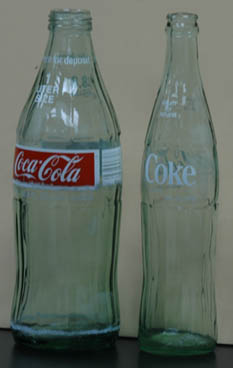
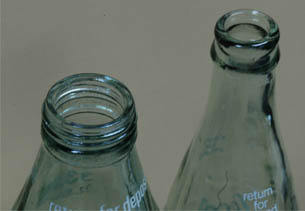
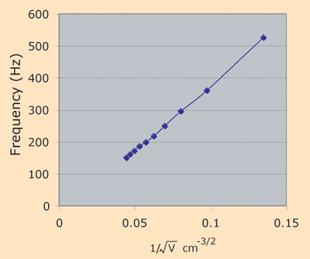
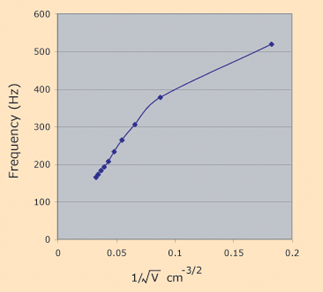

|

| Which bottle has the highest resonant frequency?
It is reasonable to expect that the cavity resonance frequency of the larger bottle would be lower. But in this case that is not so. The larger volume does act to lower the frequency, but the other variables that influence the cavity resonant frequency are the area of the opening and the effective length of the opening port. In this case the larger glass bottle has a cavity resonance frequency of 159 Hz compared to 148 Hz for the smaller bottle.
| |
The area of the opening of the larger volume is considerably larger than that for the smaller bottle. Also the effective length of the neck of the bottle is shorter. Those two factors are enough to make the frequency slightly higher for the large bottle.
|

|
Air
Volume
cm3 | Frequency
Hz |
| 505 | 150 |
| 455 | 160.5 |
| 405 | 172 |
| 355 | 186 |
| 305 | 198.5 |
| 255 | 217 |
| 205 | 249 |
| 155 | 295 |
| 105 | 360 |
| 55 | 526 |
|  | |
The data for the half-liter glass coke bottle provided a reasonable fit of the model for cavity resonance which suggests that the frequency should be inversely proportional to the square root of the volume.
Air
Volume
cm3 | Frequency
Hz |
| 930 | 164.5 |
| 830 | 173 |
| 730 | 182.5 |
| 630 | 192.5 |
| 530 | 207 |
| 430 | 233 |
| 330 | 264 |
| 230 | 305 |
| 130 | 377 |
| 30 | 519 |
|  | |
The data for the large glass bottle is not a bad approximation for a straight line for the larger volumes, but departs drastically from the straight line for small volumes. That's not so surprising since those resonances were close to the top of the bottle and very hard to sound. It certainly didn't appear like an enclosed cavity at those last two measurements.
|
Index
Wave concepts
Resonance concepts |